Digital History · 2026–27
Quantitative text analysis for historical research
Dr Yann Ryan
Blue: the three methods you will try in next week’s lab
Two running examples: trials at the Old Bailey and the Royal Society’s journals.
Part 1
What text analysis is for, what it is called, and what it can do
more than anyone can read
patterns no single text shows
what is typical of a group
where to read closely
test a claim against the whole record
The Old Bailey Proceedings contain about 123 million words, roughly three years of full-time reading.
Close · one letter, 1752
“…the pointed wire will draw the electric fire from them [the clouds]…”
Benjamin Franklin to Peter Collinson, read at the Royal Society
Distant · 64 million words
The letter shows how Franklin understood electricity; the counts show when that understanding was common.
Philosophical Transactions 47 (1751–52). Per million words, Royal Society Corpus 6.0.4 Open (17,520 texts, 1665–1920).
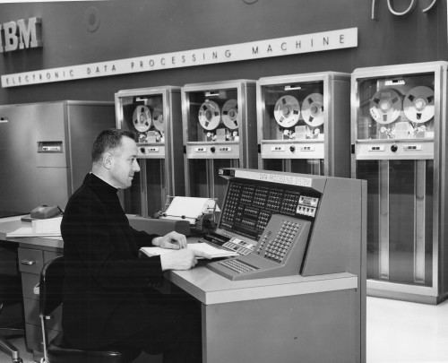
1940s
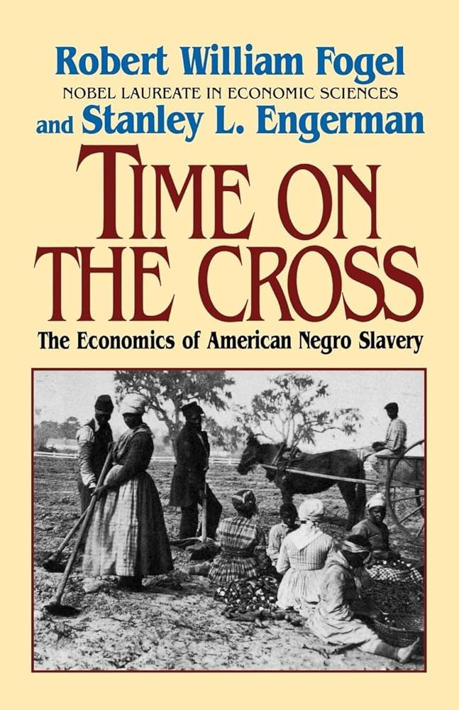
1960s–70s
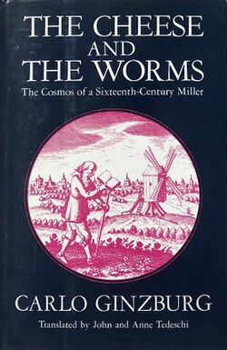
1980s
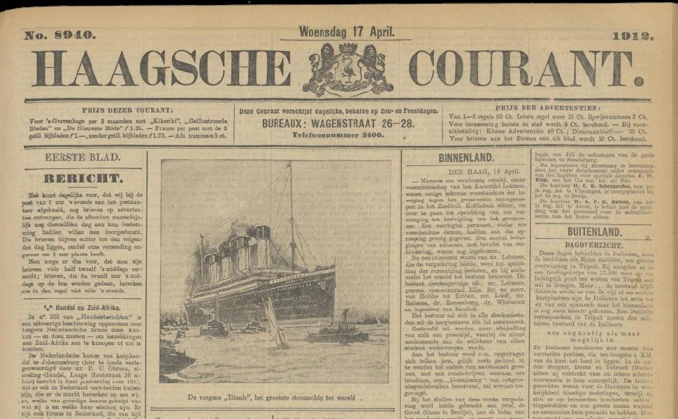
1990s–2000s
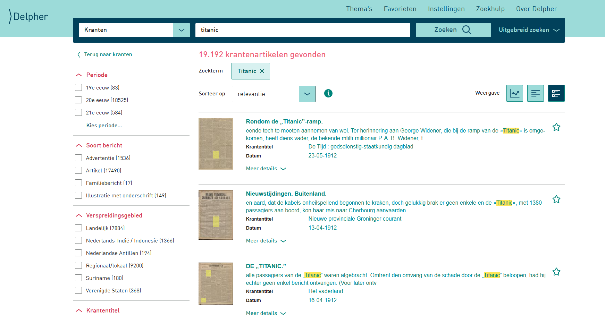
Now
Historians now count the words in their sources as well as numerical data.
language at scale
from Busa onwards
patterns across thousands of books
Google Books and n-grams
culture as data
the computer-science toolbox
Reading: Moretti, Distant Reading (2013) · Underwood, Distant Horizons (2019) · Guldi, The Dangerous Art of Text Mining (2023)
Where is it? Read it in context
How often, and when?
In what company? What is typical?
What does it mean? How did it change?
What are these texts about?
Who and where?
Who copied whom?
Which category is this text?
Summarise, extract, ask
What was electricity?
Royal Society journals
electric = electrical
the word after ‘electric’
Franklin, Faraday…
a substance becomes a quantity
The results usually lead to a revised question
The methods in this lecture belong to the counting step; the other steps depend on historical knowledge.
Can
Can’t
These three explanations apply to every chart in this lecture.
Part 2
From archive to data, and our two corpora
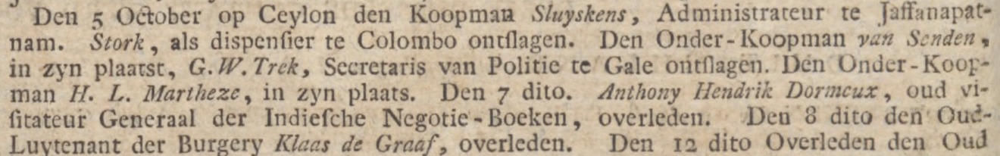
Den 5 Octobcr op Ceyloa den Koopman Sluyskens, Administrateur te Jaiknapataaai. Stork, als dispenfier te Colombo ontflagen. Den Onder-Koopman van S.-nden, in zyn plaatst, G.W.Trek, Secretaris van Politie te Gak ontflagen. Den Onder-Koopman H. L. Merthezc, in zyn plaats. Den 7 dito. Anthony Hendrik Dormcux, oud vifitatcur Generaal der Indiefche Negotie-Boeken, overleden.
OCR errors affect every count made from digitised text.
Noordhollandsche courant, 3 May 1780, p. 2. Scan and OCR: Delpher, KB – National Library of the Netherlands.
the texts
with metadata
OCR, spelling
split, lemmatise
Each step involves choices that affect the counts.
Corpus 1
trials
words
240 years
Printed accounts of trials at London’s central criminal court, each tagged with offence, verdict and punishment.
Old Bailey Online, via Hugging Face biglam/old_bailey_proceedings, CC BY-NC 4.0.
Corpus 2
texts
words
250 years
Letters, papers and abstracts published by the Royal Society, 1665–1920.
Royal Society Corpus 6.0.4 Open (Fischer, Knappen, Menzel, Teich et al.), CC BY-NC-SA 4.0.
The changes in length reflect changes in how the Proceedings were printed.
“The Prisoner stole a silver Watch, value 40s. from the Prosecutor's pocket.”
↓
The rule for splitting text into words affects what is counted.
Part 3 · Method 1
Counting words and phrases over time
Method card
How often, and when?
Count words or phrases; divide by corpus size
Trends, events, rise and fall of terms
Corpus changes, OCR, words with many meanings
Today: Delpher · electric fire → current · Chagall
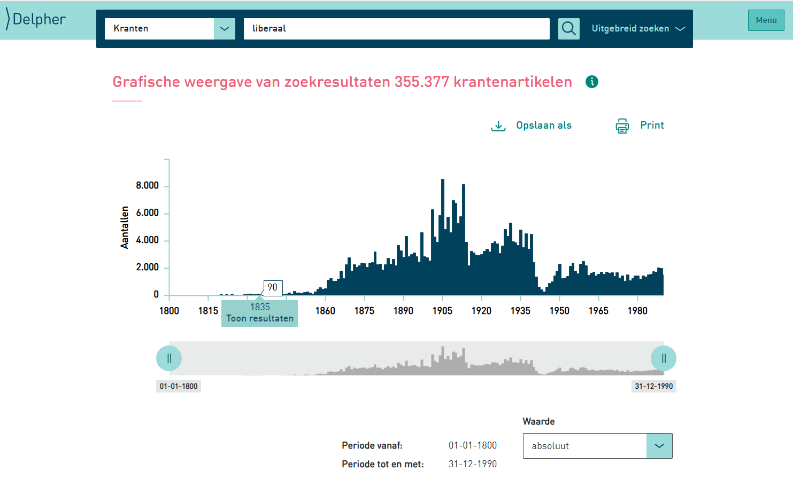
Raw count
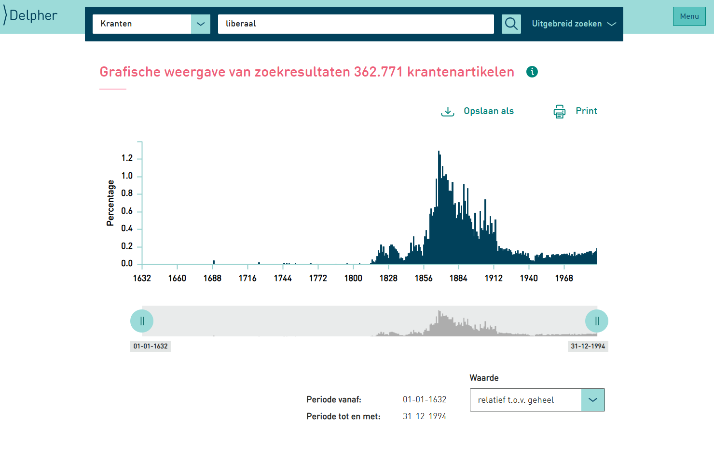
Share of all articles
Counts need to be divided by the total amount of text in each period.
| All words | count |
|---|---|
| the | 422,467 |
| i | 288,268 |
| and | 211,011 |
| to | 167,188 |
| of | 165,138 |
| a | 154,235 |
| Without stopwords | count |
|---|---|
| prisoner | 49,762 |
| mr | 36,415 |
| went | 29,152 |
| q | 26,042 |
| house | 24,685 |
| th | 21,654 |
The most frequent words mostly reflect the genre of the source.
‘The watch’ usually refers to the night watch; ‘a silver watch’ usually to stolen property.
The noun after ‘electric’ changes from virtue and fluid to current, and later to field and waves.
‘electric’ or ‘electrical’ + noun, per million words. Royal Society Corpus 6.0.4 Open.
Reading the lines shows what each phrase referred to.
Franklin 1752 · Cavendish 1771 · Hunter 1773 · Faraday 1832 · Fleming 1902. Royal Society Corpus.
Mentions of Chagall in German books fell almost to zero in 1933–45; mentions in English books continued.
‘Marc Chagall’ per billion words. Michel et al., Science 331 (2011). Data: Google Books Ngram Viewer.
Exercise 1 · 10 minutes
Search a word or n-gram
Find a trend over time
Read the articles behind it
Compare raw counts with proportions
delpher.nl/nl/kranten · then add your term to Wooclap
Summary
How often a word or phrase occurs, divided by the amount of text.
‘Electric fire’ gives way to ‘electric current’; Chagall almost disappears from German books in 1933–45.
Changes in the corpus, OCR errors, and words with several meanings.
Chart any word or phrase by decade, and read examples in context.
Part 4 · Method 2
Collocation and distinctive words
Method card
In what company? What is typical?
Count words near a word; compare one set of texts with another
How a concept is framed; what distinguishes groups
Rare-word bias; the choice of comparison
Today: gin · electricity’s company · liberty from / to · violence
window: 5 words either side
The words most often near ‘gin’ relate to measures and drinking.
| near gin | times |
|---|---|
| glass | 70 |
| quartern | 57 |
| water | 24 |
| drank | 21 |
| pint | 21 |
MI = log₂ ( observed ÷ expected )
‘Quartern’ appears near ‘gin’ about 600 times more often than expected by chance.
After 1825, words about measurement are the largest group; words about bodies and machines stay below 10 per 100.
Words within 5 of electric / electrical / electricity, grouped by hand, per 100 uses. Royal Society Corpus 6.0.4 Open.
Isaiah Berlin, ‘Two Concepts of Liberty’, 1958
‘Freedom’ is more often followed by ‘from’; ‘liberty’ more often by ‘to’.
Phrase counts: John Regan, Semantic Change and Collective Knowledge in 18th-Century Britain (2023), ECCO.
In these examples, ‘liberty to’ usually means permission.
Concordance lines for ‘liberty to’ and ‘liberty from’, Old Bailey sample.
tf-idf = tf × log ( N ÷ df )
how often the word occurs in this document
the number of documents
the number of documents that contain the word
A word that occurs in every document gets a score of zero.
Document: all deception trials. Corpus: the nine offence categories in the Old Bailey sample.
| word | tf (per 1,000) | df (of 9) | idf = log(9 ÷ df) | tf × idf |
|---|---|---|---|---|
| the | 58.0 | 9 | 0 | 0 |
| cheque | 1.61 | 8 | 0.12 | 0.19 |
| forged | 0.29 | 3 | 1.10 | 0.32 |
‘Cheque’ appears in 8 of the 9 categories, so its weight is low; ‘forged’ appears in only 3 and scores higher.
what is particular to this case?
what is typical of deception, killing, coining?
what distinguishes the two groups?
what is new in the 1830s?
what distinguishes Faraday from Davy?
Transactions or Proceedings?
The choice of document decides which comparison TF-IDF makes.
manslaughter, coroner
forged, cheques
counterfeit, florin
revolver, stabbed
The highest-scoring words show what each kind of trial is about.
These words come from the whole trial record, including witnesses’ testimony and clerks’ descriptions.
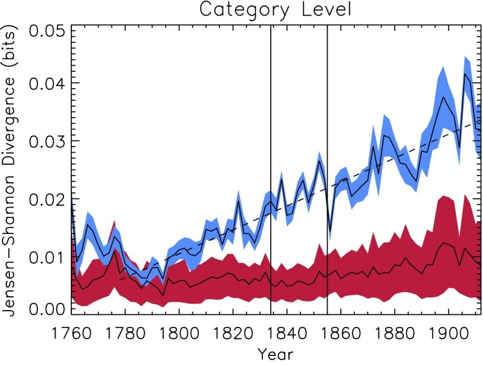
violent and non-violent trials use similar vocabulary
the vocabularies are clearly different
Klingenstein, Hitchcock and DeDeo, ‘The civilizing process in London’s Old Bailey’, PNAS 111 (2014), Fig. 1.
Summary
Which words occur near a word, and which words distinguish one set of texts from another.
‘Gin’ with ‘quartern’ and ‘glass’; ‘liberty to’ usually means permission; violent trials develop a distinct vocabulary.
MI scores favour rare words; results depend on what is compared with what.
Collocations with MI scores, distinctive words by gender, offence or verdict, and TF-IDF.
Part 5 · Method 3
From counting neighbours to word vectors
Method card
What does it mean? How did it change?
Turn each word into numbers learned from its contexts
Similar words; how meaning shifts
Needs lots of text; learns the corpus’s quirks
Today: gin, beer, pot · electricity · constable and police
“You shall know a word by the company it keeps.”
J. R. Firth, 1957
Gin and beer appear in similar contexts, so a model can group them without being told they are drinks.
a quartern of ___
a pint of ___
Words that follow the same phrases tend to be similar. Large language models are also trained to predict the next word.
Each row lists how often a word appears near each context word. This list of numbers is a vector.
Calculated from all four columns of the matrix
gin – beer 0.87
gin – watch 0.04
watch – handkerchief 0.98
Cosine similarity measures the angle between two vectors: 1 for the same direction, 0 for a right angle. It does not depend on how often a word occurs.
Every word gets 100 random numbers.
Take each word with its neighbours as pairs.
…fetch a quartern of gin; she brought it…
gin – quartern
gin – of
gin – fetch
gin – she
Real pairs move closer; random pairs move apart.
For every word in the corpus, many times. Nearest to gin, 1674–1799:
beer .86
rum .85
brandy .84
purl .84
shrub .83
Words that appear in similar contexts end up with similar numbers.
king − man + woman ≈ ?
queen ✓
kings, peace … ✗
The analogy works in the 1800–1913 model and fails in the 1674–1799 model.
With a few dozen uses, the neighbours are mostly noise.
Separately trained models use different coordinates, so their numbers are not directly comparable.
If a word’s nearest neighbours change between periods, the way the word was used has changed.
1665–1799
1800–1920
After 1800, ‘electricity’ appears near words for magnetism and heat.
Nearest neighbours of ‘electricity’ in the Royal Society lab’s two word2vec models.
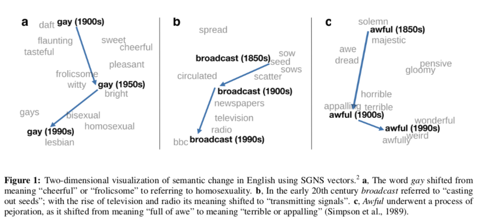
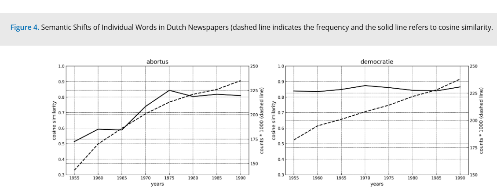
Hamilton et al. trace the changing neighbours of ‘gay’, ‘broadcast’ and ‘awful’.
Left: Hamilton, Leskovec and Jurafsky (2016). Right: Dutch newspapers, with frequency.
‘police’, 1800–1913
‘police’, 1674–1799
two words, 1674–1799
The neighbour lists include people, places and spellings that are specific to the Proceedings.
Exercise 2
Open macroscope.intelligence-media.com
Choose your concept from Exercise 1
Compare its neighbours across periods
Then add your concept to Wooclap.
Summary
How similar words are, based on all the contexts they appear in.
‘Gin’ is close to beer, rum and brandy; after 1800 ‘electricity’ appears near magnetism and heat.
Needs a lot of text; the neighbours include names, spellings and institutions specific to the corpus.
Compare two words, find neighbours in two periods, try analogies, and explore the map.
| Frequency | Association | Embeddings | |
|---|---|---|---|
| ASKS | How often? | In what company? | What does it mean? |
| EXAMPLE | electric fire → current | liberty to = permission | ‘electricity’ near magnetism after 1800 |
| TRAP | the corpus changes | rare words, the comparison | reflects the corpus |
All three methods count words in context and compare the counts; the results then need to be checked against the texts.
Part 6
What goes wrong, and how to build a corpus that answers your question
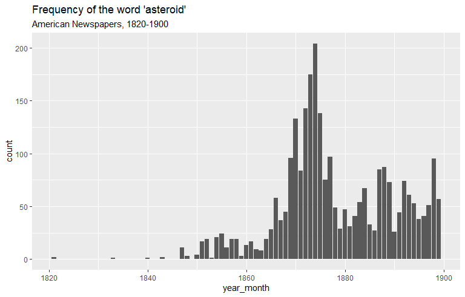
What could explain the rise from the 1860s onwards?
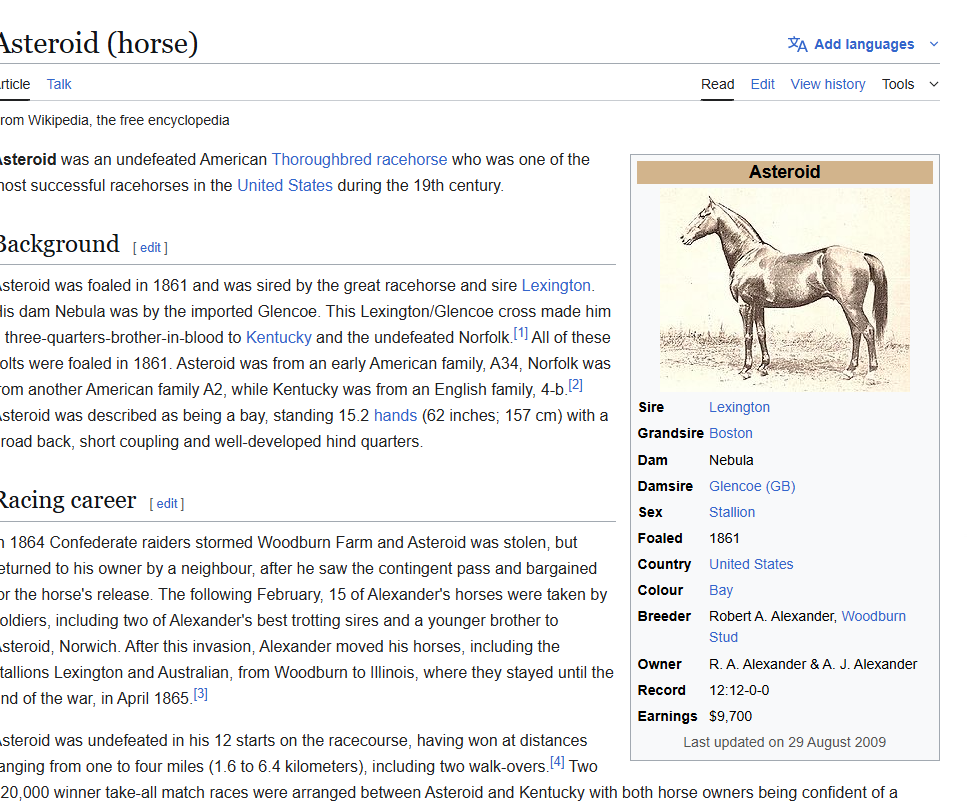
Much of the rise in ‘asteroid’ comes from reports about a racehorse of that name.
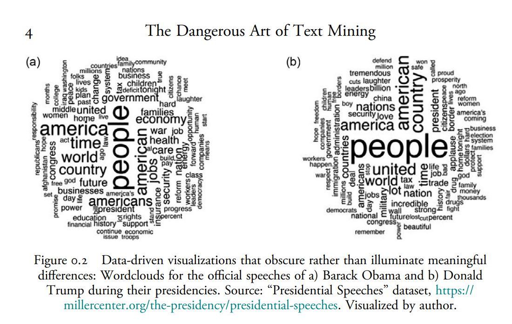
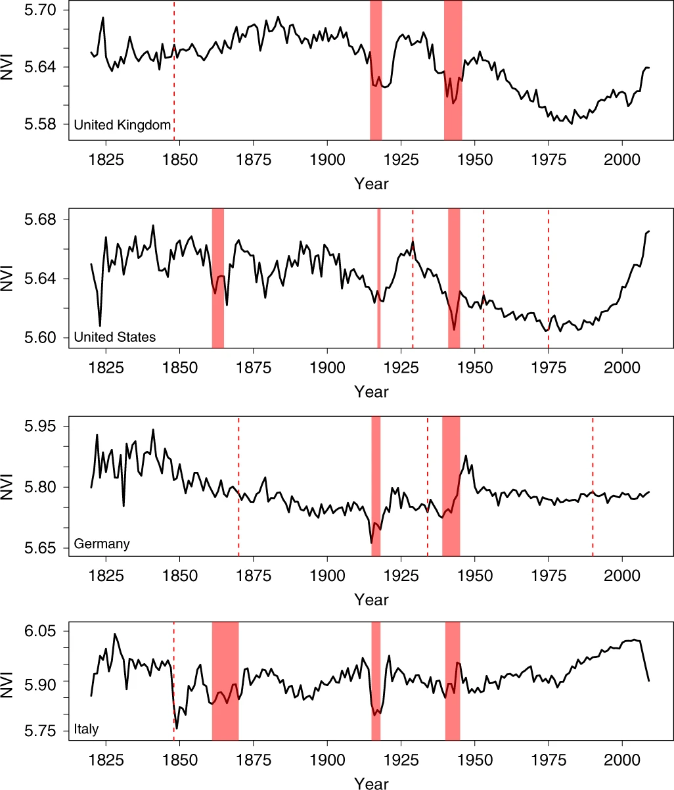
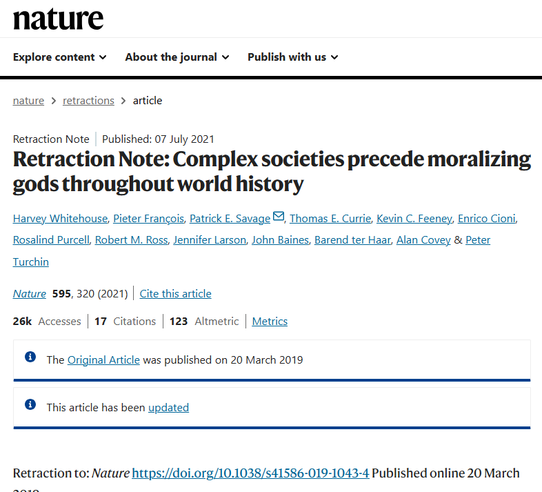
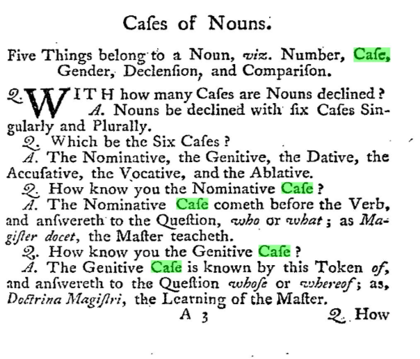
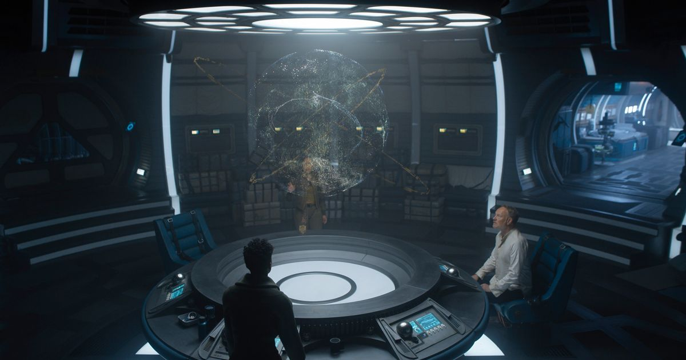
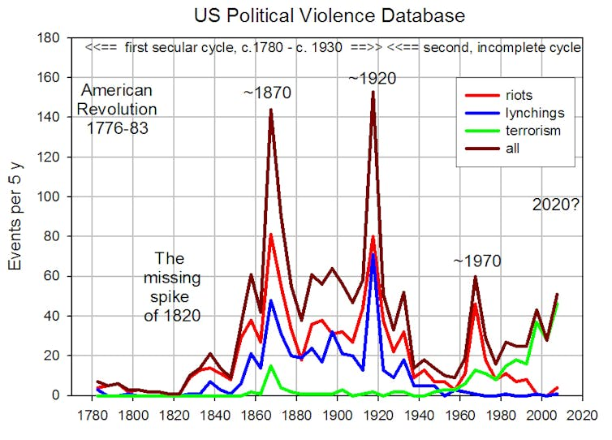
What would we need to believe about the sources?
What is your question?
What will you compare?
Does the data cover your period?
What are its biases?
voyant-tools.org
books.google.com/ngrams
via the library
programminghistorian.org
courses, minor, workshops
marimo.io
Next week
yann-ryan.github.io/marimo-digi-hist
Chrome on a laptop · no install, no account · click ‘run all’ once